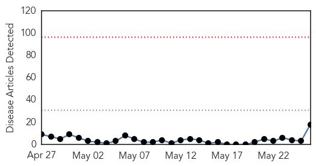
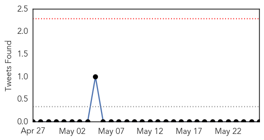
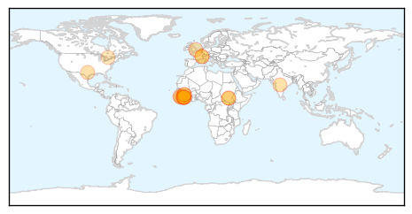
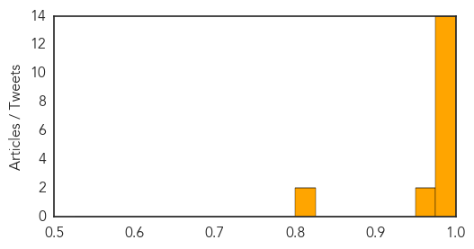

Toggle navigation
Early Warning
Daily Alerts
Ebola
May 26, 2014
Compare to:
-
Dengue Fever
Hemmorhagic Fever
Mold/Fungal Infection
Influenza
Meningitis
Pertussis / Whooping Cough
Middle East Respiratory Syndrome
Cholera
Hepatitis
Chikungunya
Yellow Fever
Bubonic Plague
West Nile Virus
Swine Flu
Measles
Unknown
Mumps
30 Day Trends
Web: 0
alerts
, 0
warnings
Twitter: 0
alerts
, 0
warnings
Top Articles:
1.000
Sierra Leone confirms first deaths
1.000
Five dead as Sierra Leone records first Ebola outbreak
1.000
Sierra Leone confirms first case of Ebola as epidemic spreads
1.000
Ebola Virus Outbreak in Sierra Leone Records Five Deaths
1.000
Four Dead in Sierra Leone Ebola Outbreak [PHOTO]
1.000
Sierra Leone confirms first Ebola death
1.000
Sierra Leone confirms first Ebola cases - News
1.000
Five dead in first Sierra Leone Ebola outbreak — RT News
1.000
Sierra Leone confirms first case of Ebola as epidemic spreads - Sierra Leone
1.000
Five dead as Sierra Leone records first Ebola outbreak
0.999
Five dead as Sierra Leone records first Ebola outbreak
0.997
Sierra Leone cool on Ebola drugs as it pleads for aid
0.988
Secret serum: Liberia Ebola drug used on Brantly is only one of many in development
0.981
Five dead as Sierra Leone records first Ebola outbreak
0.971
Testing Vaccines On Captive Chimps To Protect Wild Chimps—Is It Worth It? – Phenomena
0.960
الاخبار المصورة
0.821
Government of Canada Supports Global Efforts in Health -- OTTAWA, May 26, 2014
0.818
Government of Canada Supports Global Efforts in Health
Top Tweets:
No tweets found for May 26, 2014
Web/News Articles

Tweets

Article Locations

Article Confidences
